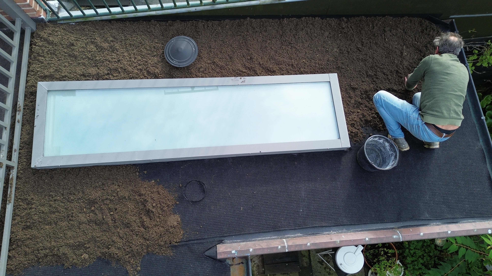
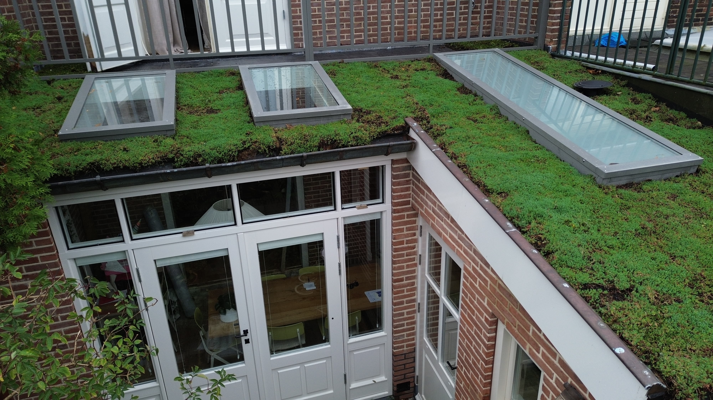

Zelf doen
Plat dak
Het merendeel van groene daken wordt aangelegd op een plat dak. Omdat je op deze manier geen rekening hoeft te houden met verschuivingen is een plat dak ook veruit het makkelijkst. Een groen, schuin dak is een vak apart en zullen wij daarom geen aandacht aan besteden in dit artikel.
Voorbereidingen treffen
Heb je de keuze gemaakt om het zelf te doen? Mooi! Lekker bezig, dan gaan we nu beginnen met de voorbereidingen.
Geschiktheid van het dak
Als eerst moeten we erachter zien te komen of jouw dak geschikt is voor een sedumlaag. Omdat deze laag in natte periodes ongeveer 80-100 kg per m2 kan wegen is het nodig om de draagkracht van het dat te weten. Indien je het zelf niet weet raden wij aan een bouwkundig adviseur te raadplegen.
Ook moeten sedumplanten zo'n 4 uur per dag zonlicht krijgen, houd in de gaten of uw dak aan deze eisen voldoet.
Aan de slag
We beginnen met het (eventuele) anti-worteldoek en drainagelaag op maat te knippen. Dit kan je het beste op het dak doen, dan heb je meteen de maat. Hou het een beetje ruim, je kan het later altijd nog bijknippen. Let op dat richels in de drainagemat richting het laagste punt van het dak of afvoerpunt lopen.
Als de matten eenmaal liggen kunnen we het substraat gaan verspreiden over het dak, reken hiervoor ongeveer 40 liter substraat per vierkante meter. Op deze manier krijg je een laagdikte van ongeveer 4 centimeter.
Vervolgens gaan we het sedum aanbrengen. Wij gaan hier uit van plaggen, zorg dat je dit niet alleen doet want de opgerolde plaggen zijn behoorlijk zwaar. De plaggen kunnen op maat gemaakt worden door middel van mes of schaar.
Om te voorkomen dat de randen van je groene dak overgroeien wordt vaak een grindrand neergelegd van ongeveer 20 centimeter breed rondom het sedum.
Bij droog weer is het verstandig je sedumdak goed te besproeien met water.
Als je klaar bent met alle stappen kun je nu genieten van je groene dak!